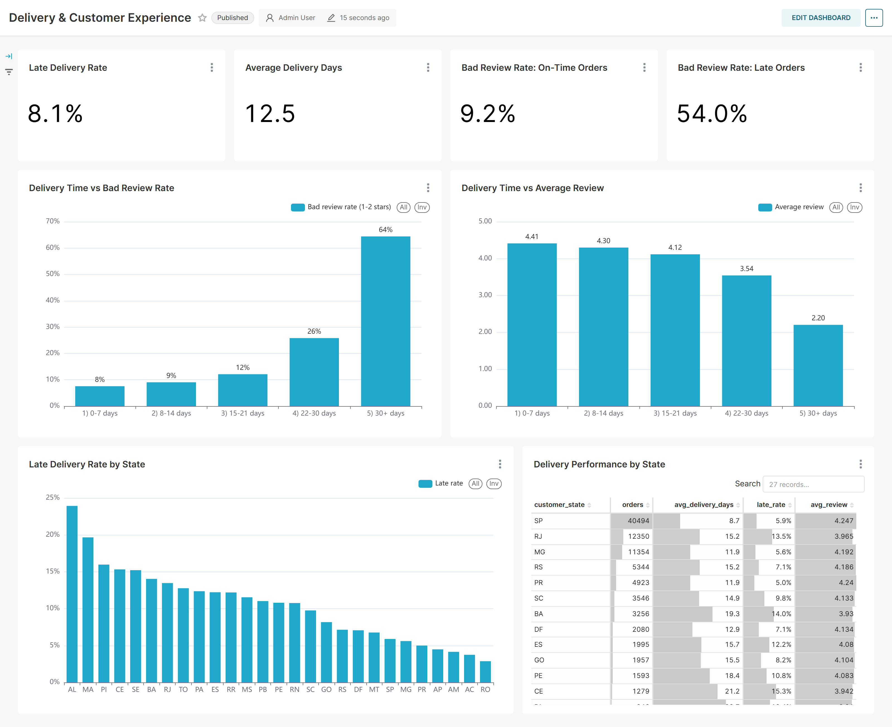

University of Toronto
Toronto, ON
Sep 2022 – Present
- Major Economics for Management Studies
- Minor Applied Statistics
- Minor Linguistics
TOEFL iBT 111 / 120
Economics · Applied Statistics · University of Toronto
I'm Shawn (Nan) Xiao, an Economics student at the University of Toronto with a Minor in Applied Statistics. I like finding natural experiments in everyday data and testing them with the right model.
Toronto, ON
Sep 2022 – Present
I'm an analytically minded Economics and Statistics student who enjoys turning messy data into clear answers. I work well in teams, communicate clearly, and stay calm under pressure.
I'm also an early adopter of agentic AI tools such as Claude Code and OpenAI Codex. I use them to automate everyday tasks like inbox management, scheduling, and communications.
Planned and ran 2+ club social events, including a Halloween dance party and a card game night, engaging 100+ students.
Helped set up booths, handed out signage and information, and guided visitors at one of Canada's largest flower and garden festivals.
SQL (DuckDB) · Python · Statistical testing · Apache Superset
An end‑to‑end analysis of ~100K real orders from a Brazilian marketplace (2016–2018). I modelled 8 raw tables into fact tables with SQL, answered six business questions (growth, funnel, cohort retention, RFM segments, delivery vs. reviews, category performance), and built three Superset dashboards with 22 charts, all generated as code through the Superset API.

Recommendations: more conservative delivery estimates for remote states, a second‑order voucher program to improve retention, and win‑back budget targeted at the "At Risk" segment first.
R · Logistic regression · Natural experiment
This project covers eleven NBA seasons (2015–2025, 14,126 games) and uses the COVID era as a natural experiment. Games in empty home arenas keep travel and arena familiarity but remove the crowd. The neutral‑site Orlando bubble removes all three. Comparing them shows where home‑court advantage actually comes from.
Home win % by crowd condition
Caveat I flagged: home advantage was already declining before COVID (58.6% → 55.5%), so the true crowd effect is probably a bit smaller than the raw gap.
Python · GitHub Actions · Web data collection
UTSC publishes how many seats each library space has, but not how heavily those spaces are used. This automated pipeline snapshots all 16 bookable rooms every 30 minutes and stores only status changes, building a booking history that doesn't exist anywhere else. Next: demand by hour and room type, normal weeks vs. December exams, and a Streamlit dashboard.
View repo ↗Open source · Apache Superset
Reviewed and fixed 37 Chinese (zh) translation entries for Superset's alerts and reports features, standardizing key terms and recording the terminology decisions for maintainers, following the project's translation guide.
View pull request ↗